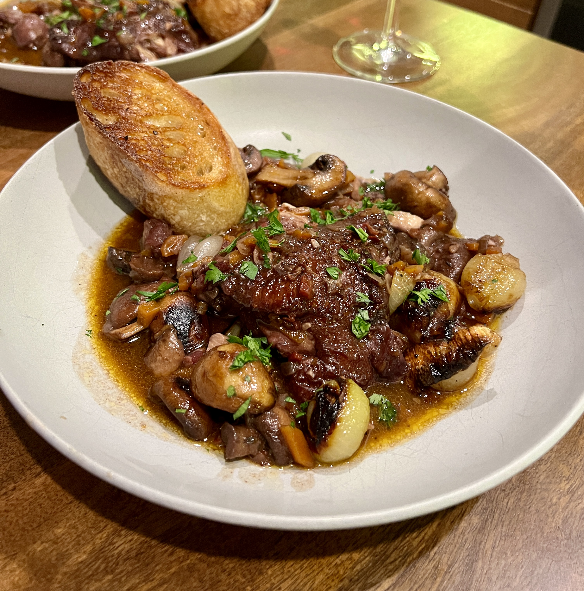
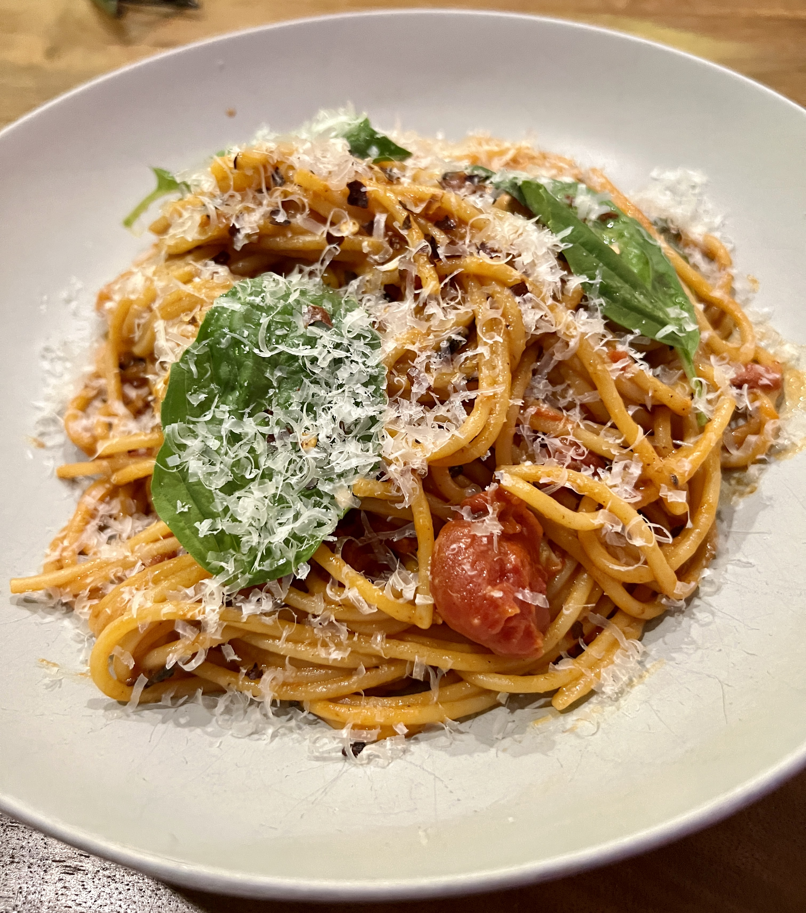
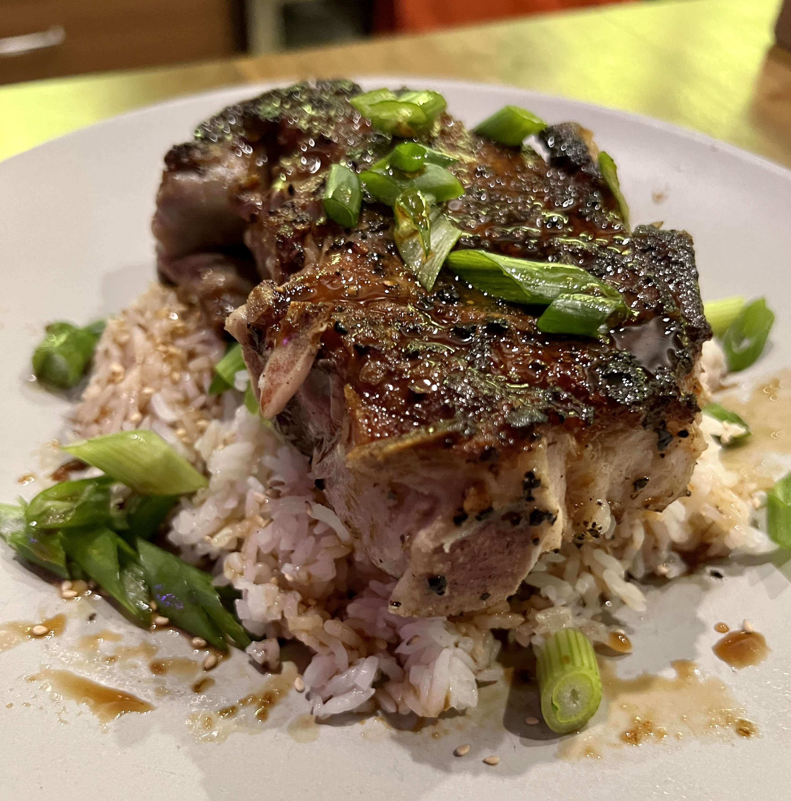

3 Recipes of Varying Difficulty to Moonlight as an Iron Chef
Donna Ada's Page
Beef Bourguignon
Spaghetti Pomodoro
How To Brine a Porkchop
This is going to be my description of the cooking website
Recipe 1

beef bourguignon
Description of the food item 2 or recipe
Recipe 2

pasta pomodoro
Description of the food item 2 or recipe
Recipe 3

brined pork chop
Description of the food item 2 or recipe